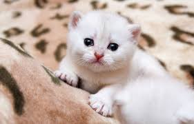

Pagina sobre gatos
Cabeçalho
- Raças
- Estampas
- Nomes
- Imagens
- Dicas
Raças de gato
Aqui listaremos as raças mais comuns no Brasil:
- Persa
- Siames
- Sphynx
- Angora
- SRD
Estampas de Gato
- Frajola
- Rajado
- Tricolor
- Preto
- Branco
Ideias de nome para seu gato
- Fêmea
- Lua
- Tofu
- Kim
- Nina
- Amora
- Macho
- Nino
- Feijão
- Tico
- Felix
- Hope
Imagens de Gatinhos
Veja como são fofos!



Dicas de como cuidar do seu Gatinho
- Rações para gatos
- Brinquedos para gatos
- Itens indispensaveis para seu gato